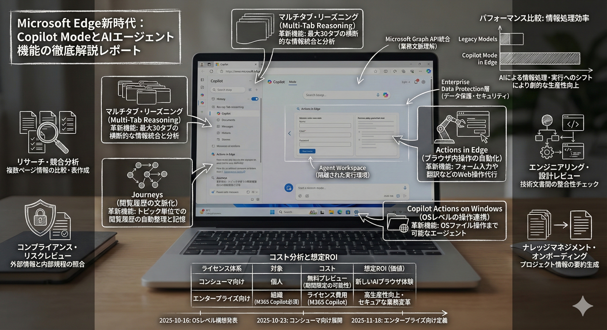

👆 クリックして詳細レポートを表示
1. 何が新しいのか？ - Microsoftが描く「AIブラウザ」の全貌
🌐 Copilot Mode in Edgeとは？
従来のWebブラウザの役割を根本から再定義し、「AIワークアシスタント」へと進化させる新モード。最大の革新は、開いているタブや履歴、ドキュメントを一連の「文脈（Context）」として統合的に理解・活用する点にあります。
4つの革新的な新機能
1. マルチタブ・リーズニング (Multi-Tab Reasoning)
開いている最大30のタブ（Webページ、PDF、社内ポータル等）を横断的に読み取り、統合・比較・分析・要約します。「手作業でのコピペ比較」を過去のものにし、リサーチ生産性を劇的に向上させます。
2. Journeys (閲覧履歴の文脈化)
過去の履歴を「プロジェクトAの調査」「旅行計画」といったトピック単位で自動整理し、文脈として記憶。「先週調べていた件について…」といった自然言語での対話継続を可能にします。
3. Actions in Edge (ブラウザ内操作の自動化)
翻訳やフォーム入力など、Webサイト上の操作をCopilotが代行するエージェント機能です。
4. Copilot Actions on Windows (OSレベル連携)
ブラウザの枠を超え、Windows OS上のファイル操作（整理、移動など）まで可能にする機能。「Agent Workspace」という隔離環境で安全に動作します。
2. 具体的にどう使えるのか？ - ビジネス活用ユースケース
業務は「情報収集」から「情報処理・実行」へ
複数のサイトを開いて比較・整理する認知負荷の高い作業をAIに任せ、人間は高次の判断に集中できます。
🔍 リサーチ・競合分析
プロンプト例: 「開いている3つの競合他社の製品ページを比較し、機能と価格の比較表を作成して」
Multi-Tab Reasoningを活用し、複数ページの情報を自動抽出・整理します。
⚖️ コンプライアンス・リスクレビュー
プロンプト例: 「このニュース記事（タブA）と、社内の〇〇規程PDF（タブB）を照らし合わせ、リスクを指摘して」
外部情報と内部規程を同時に読み込ませ、一次スクリーニングを自動化します。
💻 エンジニアリング・設計レビュー
プロンプト例: 「このGitHubのプルリクエスト（タブA）が、設計ドキュメント（タブB）の非機能要件と整合しているか評価して」
コードとドキュメントを横断して整合性をチェックします。
📚 ナレッジマネジメント・オンボーディング
プロンプト例: 「プロジェクトWikiと仕様書を読み込んで、新規参加者が10分で把握できる要約を作って」
散在する情報を統合し、キャッチアップ資料を動的に生成します。
3. 競合との違いは何か？ - Microsoftエコシステムの強み
1. 深いOS・エコシステム連携
- OS操作: Windowsローカルファイルの操作が可能（他社ブラウザにはない機能）。
- 業務コンテキスト: M365 (メール、カレンダー、Teams) の「ワークグラフ」を理解し、パーソナルな業務支援が可能。
2. エンタープライズ級のセキュリティ
- データ保護: 入力データや社内データはモデル学習に使用されません（Enterprise Data Protection）。
- DLP連携: Microsoft Purviewと連携し、"社外秘"文書の要約禁止など厳密な制御が可能。
- 一元管理: IT管理者が機能のオン/オフを一元管理可能。
3. M365 Copilotとの統合
高度な機能はM365 Copilotライセンスと紐づき、統合的なエンタープライズAI戦略の中核として機能します。
4. コストとライセンス体系
| カテゴリ | コスト・ライセンス | 利用可能な機能 |
|---|---|---|
| コンシューマ向け | 無料プレビュー （期間限定の可能性あり） |
Copilot Mode基本機能 （将来的に制限の可能性示唆） |
| エンタープライズ向け | Microsoft 365 Copilot ライセンス必須 |
組織データ連携 (Graph) 高度なMulti-tab reasoning Agent Mode エンタープライズセキュリティ |
5. 導入にあたっての注意点と現状
機能の提供ステータス
多くの機能はプレビュー段階であり、特に「Copilot Actions on Windows」はInsider向けの実験的機能です。
「Copilot Actions」の混同に注意
Web操作の「Actions in Edge」と、OS操作の「Copilot Actions on Windows」は別物です。
プライバシーと監査
Journeys機能は詳細な対話ログを保存するため、企業のデータガバナンス・監査要件との照らし合わせが必要です。
総括
Microsoft EdgeのCopilot Modeは、知的生産業務を変革する強力なツールですが、現時点ではビジョンと実装の間にギャップがあります。企業導入にあたっては、まずは限定的なPoC（概念実証）から開始し、段階的に導入を進めることが推奨されます。